Q01 · 10.5 / C4 Plants 正式分類
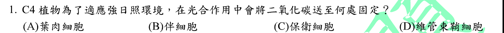
本地原卷PDF1 · 官方混科卷PDF24 · 官方原答案PDF1最下方生物表 · 釋疑PDF7
官方採計：D 原答案：D
同年度釋疑維持原答案D
主分類：Ch10 Photosynthesis
10.5 / C4 Plants
目錄行676；條目起始印刷頁203；實際目錄 PDF37
主分類理由：10.5 / C4 Plants：題幹問送往何處進行C4植物的後續固碳，須區別葉肉初次固定與維管束鞘Calvin循環。
次分類理由：無另列最小次條目；同年度釋疑保留D；分類確定為C4 Plants，葉肉也有初次固定的科學界線保留。
科學說明：官方D且釋疑維持D。PEP羧化酶在葉肉先將無機碳固定成四碳酸，再送到維管束鞘釋放CO2供Calvin循環；不能把釋疑的「只捕捉」擴張成葉肉不發生初次碳固定。
來源涵蓋範圍：Campbell正文支援分類原理；題目限定及來源措辭差異保留於科學說明。
教材正文：印刷203／PDF252、印刷204／PDF253
補充來源：本題未另列課本外來源
另行比較：比對葉肉PEP初次固定與維管束鞘Calvin循環，排除伴細胞與保衛細胞。
同年度釋疑保留D；分類確定為C4 Plants，葉肉也有初次固定的科學界線保留。
結論：證據確認，分類疑義已解決。完整覆核紀錄
Q02 · 9.6 / The Versatility of Catabolism 正式分類
本地原卷PDF1 · 官方混科卷PDF24 · 官方原答案PDF1最下方生物表 · 已核對生物釋疑PDF7下方–8
官方採計：B 原答案：B
未列於本輪取得115生物釋疑PDF7下方至8；依同年度答案PDF1最下方生物表採計
主分類：Ch09 Cellular Respiration and Fermentation
9.6 / The Versatility of Catabolism
目錄行608；條目起始印刷頁182；實際目錄 PDF37
主分類理由：9.6 / The Versatility of Catabolism：考脂肪酸分解如何匯入中央呼吸途徑，屬分解代謝多樣性。
次分類理由：無另列最小次條目；乙醯CoA為所問匯入形式，分類在分解代謝多樣性，不依選項字面另加每個循環條目。
科學說明：B。一般脂肪酸β氧化產生乙醯CoA，進入檸檬酸循環；不能寫成脂肪直接進入糖解作用。題目採一般路徑，非逐一列出所有特殊脂肪酸的末端產物。
來源涵蓋範圍：Campbell正文支援分類原理；題目限定及來源措辭差異保留於科學說明。
教材正文：印刷182／PDF231、印刷183／PDF232
補充來源：本題未另列課本外來源
另行比較：比較脂肪酸β氧化與丙酮酸氧化、循環中間產物。
乙醯CoA為所問匯入形式，分類在分解代謝多樣性，不依選項字面另加每個循環條目。
結論：證據確認，分類疑義已解決。完整覆核紀錄
Q03 · 16.2 / DNA Replication: A Closer Look 正式分類
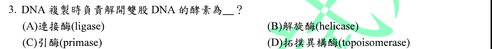
本地原卷PDF1 · 官方混科卷PDF24 · 官方原答案PDF1最下方生物表 · 已核對生物釋疑PDF7下方–8
官方採計：B 原答案：B
未列於本輪取得115生物釋疑PDF7下方至8；依同年度答案PDF1最下方生物表採計
主分類：Ch16 The Molecular Basis of Inheritance
16.2 / DNA Replication: A Closer Look
目錄行1010；條目起始印刷頁322；實際目錄 PDF39
主分類理由：16.2 / DNA Replication: A Closer Look：解旋酶拆開複製叉的DNA雙股，屬複製機制。
次分類理由：無另列最小次條目；B與複製叉機制一致，不把topoisomerase當解開配對雙股的主角。
科學說明：B。解旋酶分開配對股；拓樸異構酶處理複製叉前的扭轉應力，連接酶接合DNA片段，引發酶製造引子。
來源涵蓋範圍：Campbell正文支援分類原理；題目限定及來源措辭差異保留於科學說明。
教材正文：印刷322／PDF371、印刷323／PDF372、印刷324／PDF373
補充來源：本題未另列課本外來源
Q04 · 36.4 / Mechanisms of Stomatal Opening and Closing 正式分類
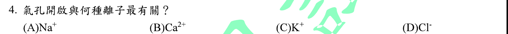
本地原卷PDF1 · 官方混科卷PDF24 · 官方原答案PDF1最下方生物表 · 已核對生物釋疑PDF7下方–8
官方採計：C 原答案：C
未列於本輪取得115生物釋疑PDF7下方至8；依同年度答案PDF1最下方生物表採計
主分類：Ch36 Resource Acquisition and Transport in Vascular Plants
36.4 / Mechanisms of Stomatal Opening and Closing
目錄行2394；條目起始印刷頁797；實際目錄 PDF45
主分類理由：36.4 / Mechanisms of Stomatal Opening and Closing：離子吸收改變保衛細胞水勢與膨壓，直接屬氣孔開閉機制。
次分類理由：無另列最小次條目；氣孔開啟機制最直接；一般膜運輸只是基礎背景，不另列次條目。
科學說明：C。K+累積使保衛細胞水勢降低，水進入後膨壓增加；這不表示氣孔調節只有鉀離子，陰離子、有機溶質及其他訊號也參與。
來源涵蓋範圍：Campbell正文支援分類原理；題目限定及來源措辭差異保留於科學說明。
教材正文：印刷797／PDF846、印刷798／PDF847
補充來源：本題未另列課本外來源
另行比較：比較K+吸收的滲透作用與Ca2+訊號、Cl−陪同運輸。
氣孔開啟機制最直接；一般膜運輸只是基礎背景，不另列次條目。
結論：證據確認，分類疑義已解決。完整覆核紀錄
Q05 · 44.3 / Survey of Excretory Systems 正式分類
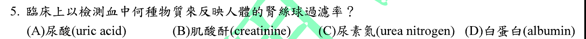
本地原卷PDF1 · 官方混科卷PDF24 · 官方原答案PDF1最下方生物表 · 已核對生物釋疑PDF7下方–8
官方採計：B 原答案：B
未列於本輪取得115生物釋疑PDF7下方至8；依同年度答案PDF1最下方生物表採計
主分類：Ch44 Osmoregulation and Excretion
44.3 / Survey of Excretory Systems
目錄行2967；條目起始印刷頁984；實際目錄 PDF47
主分類理由：44.3 / Survey of Excretory Systems：腎臟子節介紹腎絲球與濾液形成，提供血中肌酸酐反映濾過的構造基礎；此為實際目錄最小條目。
次分類理由：無另列最小次條目；GFR題落在排泄系統概覽中的腎臟與腎元濾過，採真實最小條目2967；肌酸酐特定用途由NIDDK補足。
科學說明：B。血清肌酸酐可用於估算GFR，並非直接、精確測得濾過率。Campbell提供濾過框架；NIDDK資料補充肌酸酐估算的臨床界線。
來源涵蓋範圍：Campbell支援所列分類原理；具名物種地點、現代技術與科學界線由列示來源補足，實讀範圍見來源紀錄。
教材正文：印刷985／PDF1034、印刷986／PDF1035、印刷987／PDF1036、印刷988／PDF1037
補充來源：S05
另行比較：比較含氮廢物種類、腎小管再吸收與腎絲球濾過；查看教材腎臟子標題所屬目錄。
GFR題落在排泄系統概覽中的腎臟與腎元濾過，採真實最小條目2967；肌酸酐特定用途由NIDDK補足。
結論：證據確認，分類疑義已解決。完整覆核紀錄
Q06 · 11.3 / Small Molecules and Ions as Second Messengers 正式分類
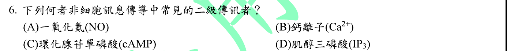
本地原卷PDF1 · 官方混科卷PDF24 · 官方原答案PDF1最下方生物表 · 已核對生物釋疑PDF7下方–8
官方採計：A 原答案：A
未列於本輪取得115生物釋疑PDF7下方至8；依同年度答案PDF1最下方生物表採計
主分類：Ch11 Cell Communication
11.3 / Small Molecules and Ions as Second Messengers
文字目錄漏列and Ions；採本地PDF目錄及正文完整題名，原文字行保留。 目錄行724；條目起始印刷頁223；實際目錄 PDF38
次分類：Ch11 Cell Communication
11.2 / Intracellular Receptors
目錄行711；條目起始印刷頁220；實際目錄 PDF38
主分類理由：11.3 / Small Molecules and Ions as Second Messengers：題目比較典型細胞內第二傳訊分子，直接對應第二傳訊者條目。
次分類理由：11.2 / Intracellular Receptors：對照NO穿膜後作用於細胞內受體，解釋本書的分類措辭。
科學說明：官方A。Campbell在第二傳訊者段落舉cAMP、Ca2+與IP3，並在細胞內受體段落介紹NO；但Purves教材也把NO列為非典型第二傳訊者。因此保留原題「常見」限定，不能教成NO在所有情境都不是第二傳訊者。
來源涵蓋範圍：Campbell支援所列分類原理；具名物種地點、現代技術與科學界線由列示來源補足，實讀範圍見來源紀錄。
教材正文：印刷220／PDF269、印刷222／PDF271、印刷223／PDF272、印刷224／PDF273、印刷225／PDF274
補充來源：S06
另行比較：對照Campbell細胞內受體段落與Purves對NO的命名。
分類在第二傳訊者並保留細胞內受體次項；官方A與NO命名差異並存，不以刪除歧義達成待審0。
結論：證據確認，分類疑義已解決。完整覆核紀錄
Q07 · 27.1 / Cell-Surface Structures 正式分類
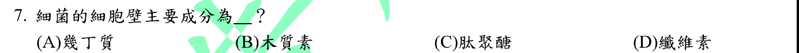
本地原卷PDF1 · 官方混科卷PDF24 · 官方原答案PDF1最下方生物表 · 已核對生物釋疑PDF7下方–8
官方採計：C 原答案：C
未列於本輪取得115生物釋疑PDF7下方至8；依同年度答案PDF1最下方生物表採計
主分類：Ch27 Bacteria and Archaea
27.1 / Cell-Surface Structures
目錄行1709；條目起始印刷頁574；實際目錄 PDF42
主分類理由：27.1 / Cell-Surface Structures：辨認細菌細胞壁的化學結構，屬原核細胞表面構造。
次分類理由：無另列最小次條目；C確認，原核細胞表面構造足以涵蓋，不把干擾選項全加入次分類。
科學說明：C。肽聚醣為典型細菌細胞壁成分；纖維素與幾丁質分屬其他生物的常見細胞壁材料。題目不是說所有細菌都有細胞壁。
來源涵蓋範圍：Campbell正文支援分類原理；題目限定及來源措辭差異保留於科學說明。
教材正文：印刷574／PDF623、印刷575／PDF624
補充來源：本題未另列課本外來源
另行比較：比較幾丁質、木質素、肽聚醣與纖維素的所屬構造。
C確認，原核細胞表面構造足以涵蓋，不把干擾選項全加入次分類。
結論：證據確認，分類疑義已解決。完整覆核紀錄
Q08 · 9.4 / The Pathway of Electron Transport 正式分類
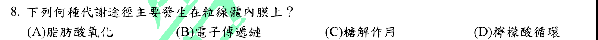
本地原卷PDF1 · 官方混科卷PDF24 · 官方原答案PDF1最下方生物表 · 已核對生物釋疑PDF7下方–8
官方採計：B 原答案：B
未列於本輪取得115生物釋疑PDF7下方至8；依同年度答案PDF1最下方生物表採計
主分類：Ch09 Cellular Respiration and Fermentation
9.4 / The Pathway of Electron Transport
目錄行582；條目起始印刷頁174；實際目錄 PDF37
主分類理由：9.4 / The Pathway of Electron Transport：直接詢問粒線體電子傳遞鏈的膜定位。
次分類理由：無另列最小次條目；內膜電子傳遞鏈最切題，主項不換成單純粒線體外形。
科學說明：B。電子傳遞鏈位於粒線體內膜；基質含檸檬酸循環多數酵素，外膜不是主要呼吸鏈位置。
來源涵蓋範圍：Campbell正文支援分類原理；題目限定及來源措辭差異保留於科學說明。
教材正文：印刷174／PDF223、印刷175／PDF224
補充來源：本題未另列課本外來源
Q09 · 49.2 / Biological Clock Regulation 正式分類
本地原卷PDF1 · 官方混科卷PDF24 · 官方原答案PDF1最下方生物表 · 已核對生物釋疑PDF7下方–8
官方採計：A 原答案：A
未列於本輪取得115生物釋疑PDF7下方至8；依同年度答案PDF1最下方生物表採計
主分類：Ch49 Nervous Systems
49.2 / Biological Clock Regulation
目錄行3258；條目起始印刷頁1094；實際目錄 PDF48
主分類理由：49.2 / Biological Clock Regulation：SCN是哺乳類日夜節律的同步中樞，直接屬生物時鐘調控。
次分類理由：無另列最小次條目；教材以哺乳類SCN支援A；原題脊椎動物措辭較廣，說明使用具體哺乳類機制，不宣稱每類脊椎動物時鐘完全相同。
科學說明：A。視交叉上核位於下視丘，接收眼部光週期訊息並同步身體時鐘；松果腺等相關器官不等於主時鐘所在地。
來源涵蓋範圍：Campbell正文支援分類原理；題目限定及來源措辭差異保留於科學說明。
教材正文：印刷1091／PDF1140、印刷1094／PDF1143、印刷1095／PDF1144
補充來源：本題未另列課本外來源
另行比較：比較大腦廣義區域、下視丘SCN與腦下垂體。
教材以哺乳類SCN支援A；原題脊椎動物措辭較廣，說明使用具體哺乳類機制，不宣稱每類脊椎動物時鐘完全相同。
結論：證據確認，分類疑義已解決。完整覆核紀錄
Q10 · 52.4 / Abiotic Factors 正式分類
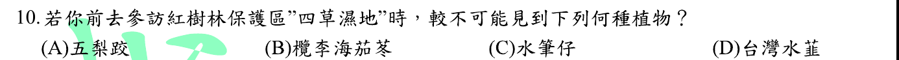
本地原卷PDF1 · 官方混科卷PDF24 · 官方原答案PDF1最下方生物表 · 已核對生物釋疑PDF7下方–8
官方採計：D 原答案：D
未列於本輪取得115生物釋疑PDF7下方至8；依同年度答案PDF1最下方生物表採計
主分類：Ch52 An Introduction to Ecology and the Biosphere
52.4 / Abiotic Factors
目錄行3516；條目起始印刷頁1184；實際目錄 PDF49
次分類：Ch52 An Introduction to Ecology and the Biosphere
52.3 / Zonation in Aquatic Biomes
目錄行3503；條目起始印刷頁1177；實際目錄 PDF49
主分類理由：52.4 / Abiotic Factors：以棲地條件判斷物種分布，鹽度與水分等非生物因子最直接。
次分類理由：52.3 / Zonation in Aquatic Biomes：用水域生物群系的鹽度與濕地情境區別河口紅樹林與內陸湖泊。
科學說明：D。台江官方資料記載四草五梨跤、欖李、海茄苳及少量人工復育水筆仔；陽明山資料指出臺灣水韭的野生棲地為夢幻湖。原D「台灣水韮」字形及B「欖李海茄苳」連寫照存，不自行改成一個物種名。地點與物種由在地官方來源支援，Campbell支援分布原理。
來源涵蓋範圍：Campbell支援所列分類原理；具名物種地點、現代技術與科學界線由列示來源補足，實讀範圍見來源紀錄。
教材正文：印刷1177／PDF1226、印刷1178／PDF1227、印刷1179／PDF1228、印刷1184／PDF1233、印刷1185／PDF1234
補充來源：S10
另行比較：逐項以台江樹種紀錄與夢幻湖棲地核對，並比較分類學和棲地分布章。
問題在地點出現可能性，採非生物因子主項、水域群系次項；B連寫與D原「台灣水韮」字形均由原圖保留。
結論：證據確認，分類疑義已解決。完整覆核紀錄
Q11 · 42.7 / Respiratory Pigments 正式分類
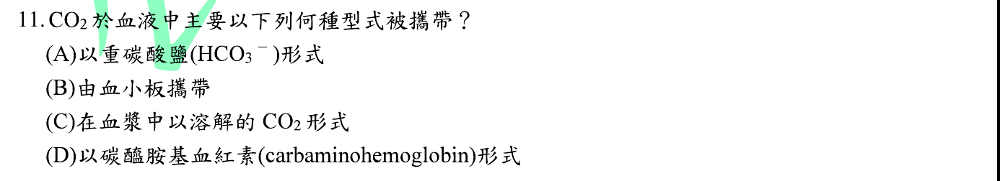
本地原卷PDF1 · 官方混科卷PDF24 · 官方原答案PDF1最下方生物表 · 已核對生物釋疑PDF7下方–8
官方採計：A 原答案：A
未列於本輪取得115生物釋疑PDF7下方至8；依同年度答案PDF1最下方生物表採計
主分類：Ch42 Circulation and Gas Exchange
42.7 / Respiratory Pigments
目錄行2853；條目起始印刷頁947；實際目錄 PDF46
主分類理由：42.7 / Respiratory Pigments：本節血液氣體運輸段落說明CO2主要以碳酸氫根運送。
次分類理由：無另列最小次條目；HCO3−佔主要比例，正文在Respiratory Pigments後段；不另虛構CO2運輸目錄葉節。
科學說明：A。大部分CO2轉為HCO3−運送於血漿，部分溶解或結合血紅素；不是大部分都直接結合血紅素，也不是由血小板運送。
來源涵蓋範圍：Campbell正文支援分類原理；題目限定及來源措辭差異保留於科學說明。
教材正文：印刷948／PDF997、印刷949／PDF998
補充來源：本題未另列課本外來源
另行比較：比較溶解CO2、碳醯胺基血紅素與HCO3−三種運送形式。
HCO3−佔主要比例，正文在Respiratory Pigments後段；不另虛構CO2運輸目錄葉節。
結論：證據確認，分類疑義已解決。完整覆核紀錄
Q12 · 19.2 / Replicative Cycles of Phages 正式分類
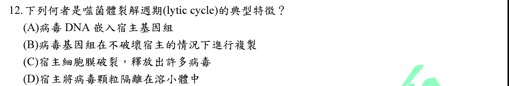
本地原卷PDF2 · 官方混科卷PDF25 · 官方原答案PDF1最下方生物表 · 釋疑PDF7
官方採計：C 原答案：C
同年度釋疑維持原答案C
主分類：Ch19 Viruses
19.2 / Replicative Cycles of Phages
目錄行1199；條目起始印刷頁402；實際目錄 PDF40
主分類理由：19.2 / Replicative Cycles of Phages：裂解循環的宿主破裂與新噬菌體釋出是本題核心。
次分類理由：無另列最小次條目；裂解週期分類確定；官方膜先突破說法保留為來源差異，不泛化至所有噬菌體。
科學說明：官方C，釋疑維持C。膜破裂伴隨噬菌體釋出；Campbell的T4圖同時描述酵素分解細胞壁並導致裂解。釋疑以壁位於膜外推論「須先突破膜」屬其解釋，不能僅憑空間位置推得所有噬菌體裂解事件的固定先後；細菌也沒有真核式溶小體。
來源涵蓋範圍：Campbell正文支援分類原理；題目限定及來源措辭差異保留於科學說明。
教材正文：印刷402／PDF451、印刷403／PDF452
補充來源：本題未另列課本外來源
另行比較：比較裂解與溶原、宿主膜壁位置及T4圖。
裂解週期分類確定；官方膜先突破說法保留為來源差異，不泛化至所有噬菌體。
結論：證據確認，分類疑義已解決。完整覆核紀錄
Q13 · 5.4 / Protein Structure and Function 正式分類
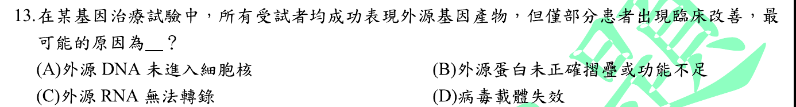
本地原卷PDF2 · 官方混科卷PDF25 · 官方原答案PDF1最下方生物表 · 已核對生物釋疑PDF7下方–8
官方採計：B 原答案：B
未列於本輪取得115生物釋疑PDF7下方至8；依同年度答案PDF1最下方生物表採計
主分類：Ch05 The Structure and Function of Large Biological Molecules
5.4 / Protein Structure and Function
目錄行268；條目起始印刷頁78；實際目錄 PDF36
次分類：Ch20 DNA Tools and Biotechnology
20.4 / Medical Applications
目錄行1274；條目起始印刷頁433；實際目錄 PDF40
主分類理由：5.4 / Protein Structure and Function：題幹已給蛋白質表現，療效仍不同，選項中的功能性折疊最能連結結構與功能。
次分類理由：20.4 / Medical Applications：基因治療是這個蛋白功能問題的應用背景，另保存醫療應用條目。
科學說明：B為所列選項最佳解釋：有蛋白產生不保證正確折疊或具足夠功能。僅有這些現象不能在真實患者中確診折疊就是唯一療效差異來源。
來源涵蓋範圍：Campbell正文支援分類原理；題目限定及來源措辭差異保留於科學說明。
教材正文：印刷82／PDF131、印刷83／PDF132、印刷434／PDF483、印刷435／PDF484
補充來源：本題未另列課本外來源
另行比較：已表現產物與未入核、無法轉錄、載體失效選項相對照。
題幹關鍵是蛋白功能，結構功能列主、基因治療列次；B為最佳而非患者個案確診。
結論：證據確認，分類疑義已解決。完整覆核紀錄
Q14 · 9.5 / Types of Fermentation 正式分類
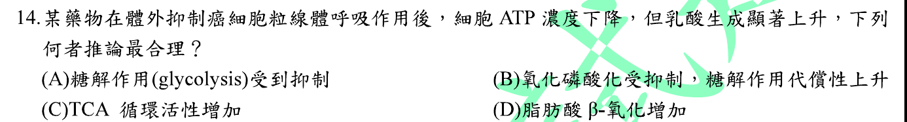
本地原卷PDF2 · 官方混科卷PDF25 · 官方原答案PDF1最下方生物表 · 已核對生物釋疑PDF7下方–8
官方採計：B 原答案：B
未列於本輪取得115生物釋疑PDF7下方至8；依同年度答案PDF1最下方生物表採計
主分類：Ch09 Cellular Respiration and Fermentation
9.5 / Types of Fermentation
目錄行595；條目起始印刷頁180；實際目錄 PDF37
次分類：Ch09 Cellular Respiration and Fermentation
9.4 / Chemiosmosis: The Energy-Coupling Mechanism
目錄行585；條目起始印刷頁175；實際目錄 PDF37
主分類理由：9.5 / Types of Fermentation：乳酸增加指向乳酸發酵維持NAD+與糖解ATP供應。
次分類理由：9.4 / Chemiosmosis: The Energy-Coupling Mechanism：粒線體呼吸受抑制和ATP下降須另對照氧化磷酸化的能量偶聯。
科學說明：B。乳酸增加符合呼吸受抑後糖解及乳酸發酵補償，但這條路徑每葡萄糖ATP較少；不能由此斷言檸檬酸循環必增強或所有癌細胞均有相同代謝表型。
來源涵蓋範圍：Campbell正文支援分類原理；題目限定及來源措辭差異保留於科學說明。
教材正文：印刷175／PDF224、印刷176／PDF225、印刷180／PDF229、印刷181／PDF230
補充來源：本題未另列課本外來源
另行比較：比較ATP下降與乳酸上升兩條證據，區分呼吸抑制和糖解代償。
乳酸發酵作主、化學滲透作同章次項均有獨立理由；每題章9只計一次。
結論：證據確認，分類疑義已解決。完整覆核紀錄
Q15 · 20.4 / Medical Applications 正式分類
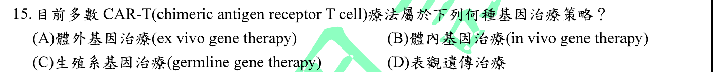
本地原卷PDF2 · 官方混科卷PDF25 · 官方原答案PDF1最下方生物表 · 已核對生物釋疑PDF7下方–8
官方採計：A 原答案：A
未列於本輪取得115生物釋疑PDF7下方至8；依同年度答案PDF1最下方生物表採計
主分類：Ch20 DNA Tools and Biotechnology
20.4 / Medical Applications
目錄行1274；條目起始印刷頁433；實際目錄 PDF40
次分類：Ch43 The Immune System
43.4 / Cancer and Immunity
目錄行2930；條目起始印刷頁974；實際目錄 PDF47
主分類理由：20.4 / Medical Applications：取出T細胞、體外基因改造後回輸，是基因治療的醫療應用。
次分類理由：43.4 / Cancer and Immunity：癌症與免疫條目說明改造T細胞辨識並攻擊癌細胞的目的。
科學說明：A。NCI所述常規自體CAR-T製程在體外改造與擴增後回輸。原題有「大多數」範圍，不擴張為不存在體內製造CAR-T的研究，也不是改造生殖細胞。
來源涵蓋範圍：Campbell支援所列分類原理；具名物種地點、現代技術與科學界線由列示來源補足，實讀範圍見來源紀錄。
教材正文：印刷434／PDF483、印刷435／PDF484、印刷974／PDF1023、印刷975／PDF1024
補充來源：S15
另行比較：比較體外、體內、生殖系與表觀遺傳四個策略。
所述常規CAR-T製程為ex vivo；免疫與醫療應用皆保存，醫療應用為主。
結論：證據確認，分類疑義已解決。完整覆核紀錄
Q16 · 20.4 / Medical Applications 正式分類
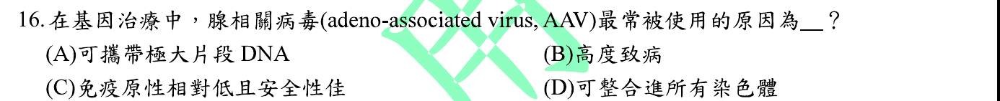
本地原卷PDF2 · 官方混科卷PDF25 · 官方原答案PDF1最下方生物表 · 已核對生物釋疑PDF7下方–8
官方採計：C 原答案：C
未列於本輪取得115生物釋疑PDF7下方至8；依同年度答案PDF1最下方生物表採計
主分類：Ch20 DNA Tools and Biotechnology
20.4 / Medical Applications
目錄行1274；條目起始印刷頁433；實際目錄 PDF40
次分類：Ch19 Viruses
19.2 / Replicative Cycles of Animal Viruses
目錄行1202；條目起始印刷頁404；實際目錄 PDF40
主分類理由：20.4 / Medical Applications：比較基因遞送載體的治療選擇，主分類為生物技術醫療應用。
次分類理由：19.2 / Replicative Cycles of Animal Viruses：動物病毒遞送遺傳物質的基本機制支援AAV載體背景。
科學說明：官方C是本題的相對比較。AAV可作基因遞送載體，但DNA包裝容量有限；「免疫原性低、安全性佳」不能解讀成沒有免疫反應或任何劑量都安全。FDA已記錄特定AAVrh74治療的嚴重肝損傷風險。
來源涵蓋範圍：Campbell支援所列分類原理；具名物種地點、現代技術與科學界線由列示來源補足，實讀範圍見來源紀錄。
教材正文：印刷404／PDF453、印刷405／PDF454、印刷434／PDF483、印刷435／PDF484
補充來源：S16
另行比較：比較包裝容量、致病性、相對免疫原性及所有染色體整合的絕對措辭。
維持官方C的相對比較，保留特定AAV安全事件；載體醫療應用與動物病毒分開存主次。
結論：證據確認，分類疑義已解決。完整覆核紀錄
Q17 · 12.3 / The Cell Cycle Control System 正式分類
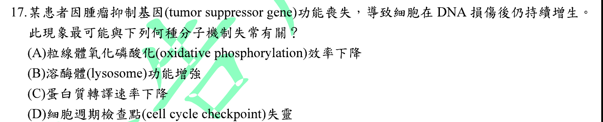
本地原卷PDF2 · 官方混科卷PDF25 · 官方原答案PDF1最下方生物表 · 已核對生物釋疑PDF7下方–8
官方採計：D 原答案：D
未列於本輪取得115生物釋疑PDF7下方至8；依同年度答案PDF1最下方生物表採計
主分類：Ch12 The Cell Cycle
12.3 / The Cell Cycle Control System
目錄行789；條目起始印刷頁244；實際目錄 PDF38
次分類：Ch18 Regulation of Gene Expression
18.5 / Interference with Normal Cell-Signaling Pathways
目錄行1166；條目起始印刷頁389；實際目錄 PDF40
主分類理由：12.3 / The Cell Cycle Control System：DNA損傷仍進行分裂，最直接是細胞週期檢查點失控。
次分類理由：18.5 / Interference with Normal Cell-Signaling Pathways：抑癌基因如p53在癌化訊息途徑中失效，補足題幹的基因層面。
科學說明：D。正常檢查點可延遲分裂以修復損傷或啟動凋亡，抑癌功能失去可讓受損DNA繼續傳遞；並非所有抑癌基因都以完全相同途徑作用。
來源涵蓋範圍：Campbell正文支援分類原理；題目限定及來源措辭差異保留於科學說明。
教材正文：印刷244／PDF293、印刷245／PDF294、印刷246／PDF295、印刷389／PDF438、印刷390／PDF439、印刷391／PDF440
補充來源：本題未另列課本外來源
另行比較：比較檢查點失靈與呼吸、溶小體、轉譯選項。
DNA損傷後增生直接指週期控制，p53訊號列次而非籠統以癌症為唯一項。
結論：證據確認，分類疑義已解決。完整覆核紀錄
Q18 · 6.4 / The Endoplasmic Reticulum: Biosynthetic Factory 正式分類
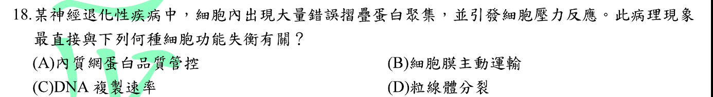
本地原卷PDF2 · 官方混科卷PDF25 · 官方原答案PDF1最下方生物表 · 已核對生物釋疑PDF7下方–8
官方採計：A 原答案：A
未列於本輪取得115生物釋疑PDF7下方至8；依同年度答案PDF1最下方生物表採計
主分類：Ch06 A Tour of the Cell
6.4 / The Endoplasmic Reticulum: Biosynthetic Factory
目錄行343；條目起始印刷頁104；實際目錄 PDF36
次分類：Ch05 The Structure and Function of Large Biological Molecules
5.4 / Protein Structure and Function
目錄行268；條目起始印刷頁78；實際目錄 PDF36
主分類理由：6.4 / The Endoplasmic Reticulum: Biosynthetic Factory：選項問失去蛋白質品質管制造成壓力的胞器，內質網最切題。
次分類理由：5.4 / Protein Structure and Function：蛋白結構與功能條目解釋錯誤折疊及聚集，避免只按疾病關鍵字分類。
科學說明：A為所列胞器的最佳選擇。內質網處理進入分泌路徑的蛋白折疊，未折疊蛋白壓力可啟動細胞反應；不是所有神經退化蛋白聚集都起源於內質網。
來源涵蓋範圍：Campbell正文支援分類原理；題目限定及來源措辭差異保留於科學說明。
教材正文：印刷82／PDF131、印刷83／PDF132、印刷104／PDF153、印刷105／PDF154、印刷230／PDF279、印刷231／PDF280
補充來源：本題未另列課本外來源
另行比較：比較細胞品質管制與一般蛋白結構、具名神經疾病分類。
題目沒有指定疾病，主為內質網品質管制，次為折疊功能；疾病分類不憑情境猜定。
結論：證據確認，分類疑義已解決。完整覆核紀錄
Q19 · 11.5 / Apoptotic Pathways and the Signals That Trigger Them 正式分類
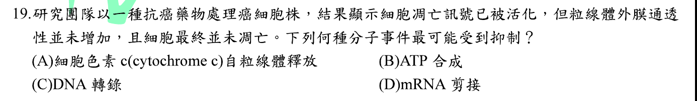
本地原卷PDF2 · 官方混科卷PDF25 · 官方原答案PDF1最下方生物表 · 已核對生物釋疑PDF7下方–8
官方採計：A 原答案：A
未列於本輪取得115生物釋疑PDF7下方至8；依同年度答案PDF1最下方生物表採計
主分類：Ch11 Cell Communication
11.5 / Apoptotic Pathways and the Signals That Trigger Them
目錄行744；條目起始印刷頁230；實際目錄 PDF38
主分類理由：11.5 / Apoptotic Pathways and the Signals That Trigger Them：粒線體膜通透化與細胞色素c釋出屬凋亡訊號途徑。
次分類理由：無另列最小次條目；粒線體依賴凋亡最直接；即使題設死亡訊號已啟動，也不等於下游不可被阻擋。
科學說明：A。就題設的粒線體依賴路徑，外膜通透化受阻可阻止cytochrome c釋出及下游caspase活化；不能推成所有外源死亡受體訊號均必須經粒線體。
來源涵蓋範圍：Campbell正文支援分類原理；題目限定及來源措辭差異保留於科學說明。
教材正文：印刷230／PDF279、印刷231／PDF280
補充來源：本題未另列課本外來源
另行比較：比較cytochrome c釋出與ATP、轉錄、剪接。
粒線體依賴凋亡最直接；即使題設死亡訊號已啟動，也不等於下游不可被阻擋。
結論：證據確認，分類疑義已解決。完整覆核紀錄
Q20 · 17.4 / Completing and Targeting the Functional Protein 正式分類
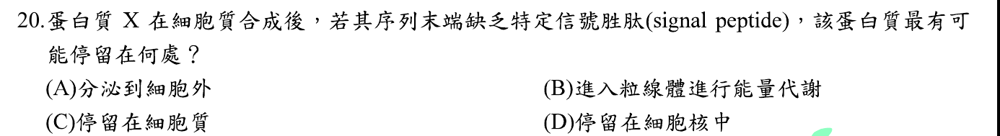
本地原卷PDF3 · 官方混科卷PDF26 · 官方原答案PDF1最下方生物表 · 已核對生物釋疑PDF7下方–8
官方採計：C 原答案：C
未列於本輪取得115生物釋疑PDF7下方至8；依同年度答案PDF1最下方生物表採計
主分類：Ch17 Gene Expression: From Gene to Protein
17.4 / Completing and Targeting the Functional Protein
目錄行1075；條目起始印刷頁352；實際目錄 PDF39
主分類理由：17.4 / Completing and Targeting the Functional Protein：比較胞質合成蛋白是否具有定位訊號，直接屬蛋白質完成與定向運輸。
次分類理由：無另列最小次條目；定向運輸分類確定，採計C；保留原題未指明N端與位置訊號的限制。
科學說明：官方C。缺乏分泌路徑所需的ER定位訊號時，典型情形留在胞質。原題寫「序列末端」而未清楚指定N端；不同胞器訊號可在N端、C端或內部，不能由「缺少任一末端訊號」推得所有蛋白一律只能在胞質。
來源涵蓋範圍：Campbell正文支援分類原理；題目限定及來源措辭差異保留於科學說明。
教材正文：印刷352／PDF401、印刷353／PDF402、印刷354／PDF403
補充來源：本題未另列課本外來源
另行比較：核對「序列末端」原文與教材SRP、ER signal及其他定位訊號。
定向運輸分類確定，採計C；保留原題未指明N端與位置訊號的限制。
結論：證據確認，分類疑義已解決。完整覆核紀錄
Q21 · 41.5 / Regulation of Appetite and Consumption 正式分類
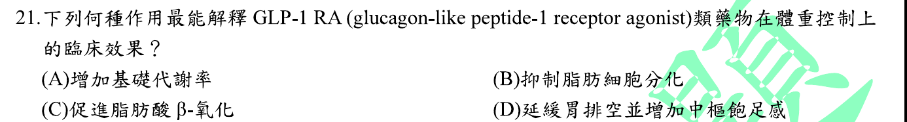
本地原卷PDF3 · 官方混科卷PDF26 · 官方原答案PDF1最下方生物表 · 已核對生物釋疑PDF7下方–8
官方採計：D 原答案：D
未列於本輪取得115生物釋疑PDF7下方至8；依同年度答案PDF1最下方生物表採計
主分類：Ch41 Animal Nutrition
41.5 / Regulation of Appetite and Consumption
目錄行2746；條目起始印刷頁917；實際目錄 PDF46
次分類：Ch41 Animal Nutrition
41.5 / Regulation of Digestion
目錄行2740；條目起始印刷頁915；實際目錄 PDF46
主分類理由：41.5 / Regulation of Appetite and Consumption：抑制食慾與減少攝食最直接對應食慾及攝食調節。
次分類理由：41.5 / Regulation of Digestion：延緩胃排空是另一項題設機制，另列消化調節最小條目。
科學說明：D。FDA semaglutide說明書支持GLP-1受體作用於食慾相關腦區並延緩胃排空；Campbell提供腸胃與能量恆定框架，不冒稱課本列有該新藥的完整藥理。
來源涵蓋範圍：Campbell支援所列分類原理；具名物種地點、現代技術與科學界線由列示來源補足，實讀範圍見來源紀錄。
教材正文：印刷915／PDF964、印刷916／PDF965、印刷917／PDF966、印刷918／PDF967
補充來源：S21
另行比較：比較攝食／胃排空與脂肪分化、β氧化選項。
主食慾、次消化調節，藥物細節由FDA補證，不把臨床新藥假裝是目錄項。
結論：證據確認，分類疑義已解決。完整覆核紀錄
Q22 · 45.1 / Intercellular Information Flow 正式分類
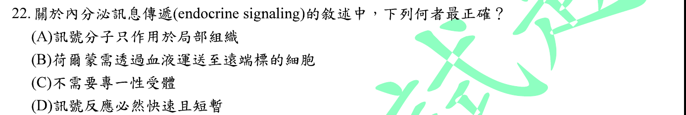
本地原卷PDF3 · 官方混科卷PDF26 · 官方原答案PDF1最下方生物表 · 已核對生物釋疑PDF7下方–8
官方採計：B 原答案：B
未列於本輪取得115生物釋疑PDF7下方至8；依同年度答案PDF1最下方生物表採計
主分類：Ch45 Hormones and the Endocrine System
45.1 / Intercellular Information Flow
目錄行2998；條目起始印刷頁1000；實際目錄 PDF47
主分類理由：45.1 / Intercellular Information Flow：辨別內分泌的遠距訊息傳遞，屬細胞間資訊流。
次分類理由：無另列最小次條目；血液遠距靶細胞符合B，最小項是Intercellular Information Flow。
科學說明：B。內分泌激素進入血液到達遠端靶細胞，靶細胞須有適當受體；距離與傳遞方式比反應快慢更能界定內分泌。
來源涵蓋範圍：Campbell正文支援分類原理；題目限定及來源措辭差異保留於科學說明。
教材正文：印刷1000／PDF1049、印刷1001／PDF1050
補充來源：本題未另列課本外來源
另行比較：比較內分泌與旁分泌，檢查受體和反應速度絕對詞。
血液遠距靶細胞符合B，最小項是Intercellular Information Flow。
結論：證據確認，分類疑義已解決。完整覆核紀錄
Q23 · 15.2 / X Inactivation in Female Mammals 正式分類
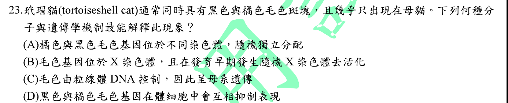
本地原卷PDF3 · 官方混科卷PDF26 · 官方原答案PDF1最下方生物表 · 已核對生物釋疑PDF7下方–8
官方採計：B 原答案：B
未列於本輪取得115生物釋疑PDF7下方至8；依同年度答案PDF1最下方生物表採計
主分類：Ch15 The Chromosomal Basis of Inheritance
15.2 / X Inactivation in Female Mammals
目錄行948；條目起始印刷頁300；實際目錄 PDF39
主分類理由：15.2 / X Inactivation in Female Mammals：玳瑁貓毛色嵌合由不同細胞隨機失活不同X染色體造成。
次分類理由：無另列最小次條目；X失活足以解釋典型毛色，不因題幹說「幾乎」而改成絕無例外。
科學說明：B。帶不同毛色等位基因的雌性細胞群因X失活而形成斑塊；不把本題的典型情形說成所有玳瑁貓必然都是一般XX雌貓。
來源涵蓋範圍：Campbell正文支援分類原理；題目限定及來源措辭差異保留於科學說明。
教材正文：印刷300／PDF349、印刷301／PDF350
補充來源：本題未另列課本外來源
Q24 · 14.4 / Genetic Testing and Counseling 正式分類
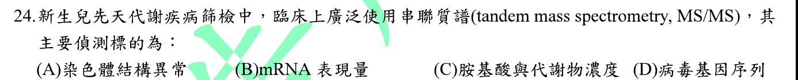
本地原卷PDF3 · 官方混科卷PDF26 · 官方原答案PDF1最下方生物表 · 已核對生物釋疑PDF7下方–8
官方採計：C 原答案：C
未列於本輪取得115生物釋疑PDF7下方至8；依同年度答案PDF1最下方生物表採計
主分類：Ch14 Mendel and the Gene Idea
14.4 / Genetic Testing and Counseling
目錄行920；條目起始印刷頁287；實際目錄 PDF38
主分類理由：14.4 / Genetic Testing and Counseling：新生兒先天代謝病的生化篩檢，對應遺傳檢測及諮詢中的新生兒篩檢。
次分類理由：無另列最小次條目；新生兒遺傳檢測項支援應用，CDC補MS/MS分析物；篩檢和確診不混同。
科學說明：C。MS/MS檢測乾血點中胺基酸及相關代謝物，也可分析醯基肉鹼；不是以一次DNA定序找所有染色體異常。Campbell的PKU新生兒檢測框架由CDC資料補足串聯質譜細節。
來源涵蓋範圍：Campbell支援所列分類原理；具名物種地點、現代技術與科學界線由列示來源補足，實讀範圍見來源紀錄。
教材正文：印刷287／PDF336、印刷288／PDF337、印刷289／PDF338
補充來源：S24
另行比較：比較代謝物篩檢、mRNA表現、染色體結構及病毒DNA。
新生兒遺傳檢測項支援應用，CDC補MS/MS分析物；篩檢和確診不混同。
結論：證據確認，分類疑義已解決。完整覆核紀錄
Q25 · 27.6 / Mutualistic Bacteria 正式分類
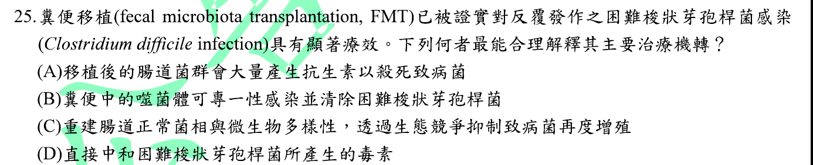
本地原卷PDF3 · 官方混科卷PDF26 · 官方原答案PDF1最下方生物表 · 已核對生物釋疑PDF7下方–8
官方採計：C 原答案：C
未列於本輪取得115生物釋疑PDF7下方至8；依同年度答案PDF1最下方生物表採計
主分類：Ch27 Bacteria and Archaea
27.6 / Mutualistic Bacteria
目錄行1771；條目起始印刷頁587；實際目錄 PDF42
次分類：Ch27 Bacteria and Archaea
27.5 / Ecological Interactions
目錄行1764；條目起始印刷頁587；實際目錄 PDF42
主分類理由：27.6 / Mutualistic Bacteria：糞菌移植恢復有益腸道菌群及宿主關係，主分類是互利細菌。
次分類理由：27.5 / Ecological Interactions：定殖抗性涉及微生物間的生態交互作用，同章次條目仍保留。
科學說明：C。恢復菌群及其功能有助抑制C. difficile；原始研究支持特定共生菌的膽汁酸代謝與抗性，不表示多樣性一項指標可解釋全部療效。保留原題Clostridium名稱，現行名稱為Clostridioides difficile。
來源涵蓋範圍：Campbell支援所列分類原理；具名物種地點、現代技術與科學界線由列示來源補足，實讀範圍見來源紀錄。
教材正文：印刷587／PDF636、印刷588／PDF637
補充來源：S25
另行比較：比較菌群生態重建與抗生素、噬菌體、直接中和毒素三個替代解釋。
互利細菌為主、生態互動為同章次項；特定膽汁酸研究提供機制實例而非唯一機制。
結論：證據確認，分類疑義已解決。完整覆核紀錄
Q26 · 15.4 / Abnormal Chromosome Number 正式分類
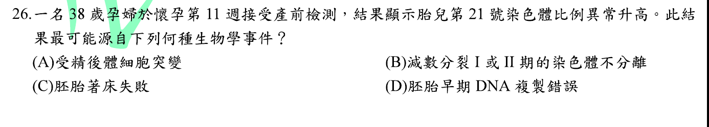
本地原卷PDF3 · 官方混科卷PDF26 · 官方原答案PDF1最下方生物表 · 已核對生物釋疑PDF7下方–8
官方採計：B 原答案：B
未列於本輪取得115生物釋疑PDF7下方至8；依同年度答案PDF1最下方生物表採計
主分類：Ch15 The Chromosomal Basis of Inheritance
15.4 / Abnormal Chromosome Number
目錄行968；條目起始印刷頁307；實際目錄 PDF39
次分類：Ch15 The Chromosomal Basis of Inheritance
15.4 / Human Conditions Due to Chromosomal Alterations
目錄行974；條目起始印刷頁308；實際目錄 PDF39
主分類理由：15.4 / Abnormal Chromosome Number：21三體最常見的染色體數目錯誤機制是不分離。
次分類理由：15.4 / Human Conditions Due to Chromosomal Alterations：另保存人體染色體異常條目中的Down syndrome應用。
科學說明：B。減數分裂I或II不分離可產生多一條21號染色體的配子；高齡與風險增加相關。篩檢提示高風險不等於確診，唐氏症也可有轉位或嵌合型，不能把所有案例等同單一來源。
來源涵蓋範圍：Campbell正文支援分類原理；題目限定及來源措辭差異保留於科學說明。
教材正文：印刷307／PDF356、印刷308／PDF357、印刷309／PDF358
補充來源：本題未另列課本外來源
另行比較：比較減數不分離與胚胎體細胞／複製錯誤，核對Down syndrome。
數目異常主項與人體異常次項並存，風險檢測未當確診。
結論：證據確認，分類疑義已解決。完整覆核紀錄
Q27 · 15.2 / Inheritance of X-Linked Genes 正式分類
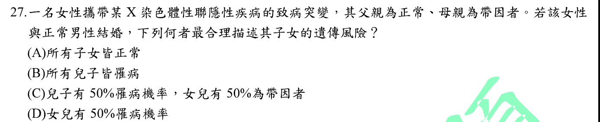
本地原卷PDF4 · 官方混科卷PDF27 · 官方原答案PDF1最下方生物表 · 已核對生物釋疑PDF7下方–8
官方採計：C 原答案：C
未列於本輪取得115生物釋疑PDF7下方至8；依同年度答案PDF1最下方生物表採計
主分類：Ch15 The Chromosomal Basis of Inheritance
15.2 / Inheritance of X-Linked Genes
目錄行945；條目起始印刷頁299；實際目錄 PDF39
主分類理由：15.2 / Inheritance of X-Linked Genes：女性帶因者與正常男性婚配，須依X連鎖隱性傳遞分別計算男女後代。
次分類理由：無另列最小次條目；XA/XA、XA/Xa、XA/Y、Xa/Y各1/4；每個性別內1/2風險符合C，題幹女子確為帶因者。
科學說明：C。題幹已明說女子為帶因者：XAXa×XAY，兒子中1/2患病、女兒中1/2帶因；這是各性別內機率，不能再把女子帶因機率乘1/2。
來源涵蓋範圍：Campbell正文支援分類原理；題目限定及來源措辭差異保留於科學說明。
教材正文：印刷299／PDF348、印刷300／PDF349
補充來源：本題未另列課本外來源
另行比較：獨立列XAXa母親與XAY父親的四種配子組合。
XA/XA、XA/Xa、XA/Y、Xa/Y各1/4；每個性別內1/2風險符合C，題幹女子確為帶因者。
結論：證據確認，分類疑義已解決。完整覆核紀錄
Q28 · 17.5 / Types of Small-Scale Mutations 正式分類
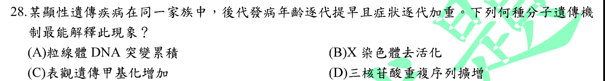
本地原卷PDF4 · 官方混科卷PDF27 · 官方原答案PDF1最下方生物表 · 已核對生物釋疑PDF7下方–8
官方採計：D 原答案：D
未列於本輪取得115生物釋疑PDF7下方至8；依同年度答案PDF1最下方生物表採計
主分類：Ch17 Gene Expression: From Gene to Protein
17.5 / Types of Small-Scale Mutations
目錄行1085；條目起始印刷頁357；實際目錄 PDF39
次分類：Ch21 Genomes and Their Evolution
21.4 / Other Repetitive DNA, Including Simple Sequence DNA
目錄行1330；條目起始印刷頁452；實際目錄 PDF40
主分類理由：17.5 / Types of Small-Scale Mutations：世代提早發病的分子解釋是重複單位增加，主要對應序列插入類型的基因突變框架。
次分類理由：21.4 / Other Repetitive DNA, Including Simple Sequence DNA：簡單重複序列條目提供短串聯重複及重複數變異的結構背景。
科學說明：D。三核苷酸重複擴增可造成遺傳早發現象；本題未指定疾病，不能把每個重複擴增病都說成同一基因、同一親代偏向。Campbell所列條目支援插入與重複DNA原理，早發機制另由Huntington原始研究及作者GeneReviews補足，不虛構教材有「遺傳早發」目錄項。
來源涵蓋範圍：Campbell支援所列分類原理；具名物種地點、現代技術與科學界線由列示來源補足，實讀範圍見來源紀錄。
教材正文：印刷357／PDF406、印刷358／PDF407、印刷359／PDF408、印刷360／PDF409、印刷452／PDF501、印刷453／PDF502
補充來源：S28
另行比較：比較X失活、甲基化、粒線體與動態重複擴增；查本書有無精確早發目錄。
以基因插入突變主項、簡單重複DNA次項承接；早發由列示研究補足，無虛構最小葉節。
結論：證據確認，分類疑義已解決。完整覆核紀錄
Q29 · 6.5 / Peroxisomes: Oxidation 正式分類
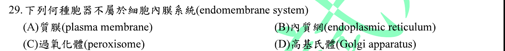
本地原卷PDF4 · 官方混科卷PDF27 · 官方原答案PDF1最下方生物表 · 釋疑PDF8
官方採計：C 原答案：C
同年度釋疑維持原答案C
主分類：Ch06 A Tour of the Cell
6.5 / Peroxisomes: Oxidation
目錄行371；條目起始印刷頁112；實際目錄 PDF36
次分類：Ch06 A Tour of the Cell
6.4 / The Endomembrane System: A Review
目錄行355；條目起始印刷頁108；實際目錄 PDF36
主分類理由：6.5 / Peroxisomes: Oxidation：直接辨認被排除於本書典型內膜系統的過氧化體。
次分類理由：6.4 / The Endomembrane System: A Review：內膜系統回顧提供其他選項的膜交通分類基準，同章次條目完整保存。
科學說明：官方C，釋疑維持C。Campbell將過氧化體另列，故可確認本題分類。官方所引「並非源自內膜系統」不能當成普遍生合成定律；原始研究在特定人類細胞模型顯示ER與粒線體來源囊泡參與新生過氧化體。分類慣例與生合成來源須分開。
來源涵蓋範圍：Campbell支援所列分類原理；具名物種地點、現代技術與科學界線由列示來源補足，實讀範圍見來源紀錄。
教材正文：印刷104／PDF153、印刷108／PDF157、印刷109／PDF158、印刷112／PDF161
補充來源：S29
另行比較：比較內膜交通分類與過氧化體生合成，覆讀同年釋疑。
官方C及分類慣例不變，ER/粒線體來源研究與官方絕對措辭衝突明列。
結論：證據確認，分類疑義已解決。完整覆核紀錄
Q30 · 7.3 / Facilitated Diffusion: Passive Transport Aided by Proteins 正式分類
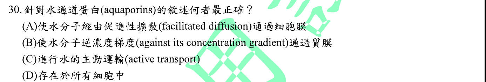
本地原卷PDF4 · 官方混科卷PDF27 · 官方原答案PDF1最下方生物表 · 已核對生物釋疑PDF7下方–8
官方採計：A 原答案：A
未列於本輪取得115生物釋疑PDF7下方至8；依同年度答案PDF1最下方生物表採計
主分類：Ch07 Membrane Structure and Function
7.3 / Facilitated Diffusion: Passive Transport Aided by Proteins
目錄行443；條目起始印刷頁135；實際目錄 PDF36
主分類理由：7.3 / Facilitated Diffusion: Passive Transport Aided by Proteins：水通道蛋白促進被動水運輸，直接屬促進性擴散。
次分類理由：無另列最小次條目；A確定，膜運輸機制為主，沒有把題目泛化成每個細胞都有相同水通道。
科學說明：A。aquaporin加速水跨膜移動，淨流取決於水勢或滲透梯度而非直接消耗ATP；不是所有膜的水運輸都只能靠aquaporin。
來源涵蓋範圍：Campbell正文支援分類原理；題目限定及來源措辭差異保留於科學說明。
教材正文：印刷132／PDF181、印刷133／PDF182、印刷135／PDF184、印刷136／PDF185
補充來源：本題未另列課本外來源
另行比較：比較被動促進性擴散與主動運輸、所有細胞絕對敘述。
A確定，膜運輸機制為主，沒有把題目泛化成每個細胞都有相同水通道。
結論：證據確認，分類疑義已解決。完整覆核紀錄
Q31 · 23.3 / Genetic Drift 正式分類
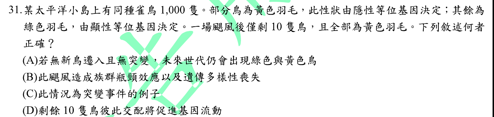
本地原卷PDF4 · 官方混科卷PDF27 · 官方原答案PDF1最下方生物表 · 已核對生物釋疑PDF7下方–8
官方採計：B 原答案：B
未列於本輪取得115生物釋疑PDF7下方至8；依同年度答案PDF1最下方生物表採計
主分類：Ch23 The Evolution of Populations
23.3 / Genetic Drift
目錄行1455；條目起始印刷頁494；實際目錄 PDF41
主分類理由：23.3 / Genetic Drift：颶風造成族群驟減與等位基因隨機喪失，是瓶頸型遺傳漂變。
次分類理由：無另列最小次條目；瓶頸且喪失等位基因，後代只能承襲現存a；分類由情境與遺傳推論確認。
科學說明：B。若倖存者全為隱性aa，且沒有突變或外來基因流，這批繁殖後代無法自行恢復已消失的顯性等位基因。族群內交配不是基因流；題目未提供颶風選擇特定基因型的證據。
來源涵蓋範圍：Campbell正文支援分類原理；題目限定及來源措辭差異保留於科學說明。
教材正文：印刷494／PDF543、印刷495／PDF544、印刷496／PDF545
補充來源：本題未另列課本外來源
另行比較：重算10隻全aa的後代可能性，區分漂變、選汰、突變與基因流。
瓶頸且喪失等位基因，後代只能承襲現存a；分類由情境與遺傳推論確認。
結論：證據確認，分類疑義已解決。完整覆核紀錄
Q32 · 23.4 / Natural Selection: A Closer Look 正式分類
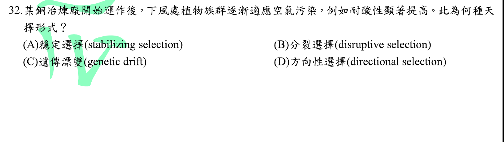
本地原卷PDF4 · 官方混科卷PDF27 · 官方原答案PDF1最下方生物表 · 已核對生物釋疑PDF7下方–8
官方採計：D 原答案：D
未列於本輪取得115生物釋疑PDF7下方至8；依同年度答案PDF1最下方生物表採計
主分類：Ch23 The Evolution of Populations
23.4 / Natural Selection: A Closer Look
目錄行1465；條目起始印刷頁497；實際目錄 PDF41
主分類理由：23.4 / Natural Selection: A Closer Look：多代族群表型朝耐酸端改變，符合定向天擇。
次分類理由：無另列最小次條目；耐酸端提高符合D；原題未提供完整世代資料，說明明列天擇的可遺傳前提。
科學說明：D。以耐酸差異可遺傳且影響繁殖成功為前提，污染壓力提高較耐酸個體的比例。個體短期生理調節本身不能作為天擇的證據。
來源涵蓋範圍：Campbell正文支援分類原理；題目限定及來源措辭差異保留於科學說明。
教材正文：印刷497／PDF546、印刷498／PDF547
補充來源：本題未另列課本外來源
另行比較：比較定向、穩定與分裂天擇，另區別個體馴化。
耐酸端提高符合D；原題未提供完整世代資料，說明明列天擇的可遺傳前提。
結論：證據確認，分類疑義已解決。完整覆核紀錄
Q33 · 27.4 / Archaea 正式分類
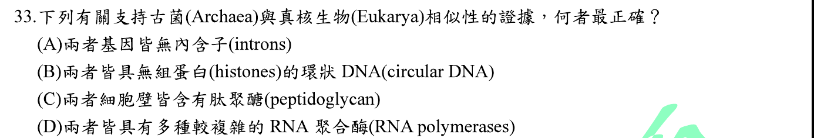
本地原卷PDF5 · 官方混科卷PDF28 · 官方原答案PDF1最下方生物表 · 已核對生物釋疑PDF7下方–8
官方採計：D 原答案：D
未列於本輪取得115生物釋疑PDF7下方至8；依同年度答案PDF1最下方生物表採計
主分類：Ch27 Bacteria and Archaea
27.4 / Archaea
目錄行1754；條目起始印刷頁585；實際目錄 PDF42
主分類理由：27.4 / Archaea：題目比較古菌與真核的分子特性，最小條目Archaea含三域比較表27.2。
次分類理由：無另列最小次條目；縮到Archaea最小項1754，撤去過廣的原核多樣性概覽；教材Several kinds與研究差異完整保存。
科學說明：官方D。實看本地第12版印刷585／PDF634表27.2，古菌與真核RNA polymerase均寫Several kinds，原表照存。但原始結構研究指出古菌通常是一種多次單元RNA聚合酶，真核有多種核RNA聚合酶；「多種」與「多次單元」不能混同。以三域分子特性確定分類，不把官方採計當成對該措辭的科學背書。
來源涵蓋範圍：Campbell支援所列分類原理；具名物種地點、現代技術與科學界線由列示來源補足，實讀範圍見來源紀錄。
教材正文：印刷583／PDF632、印刷584／PDF633、印刷585／PDF634
補充來源：S33
另行比較：實看表27.2並對照古菌RNA聚合酶結構原始研究。
縮到Archaea最小項1754，撤去過廣的原核多樣性概覽；教材Several kinds與研究差異完整保存。
結論：證據確認，分類疑義已解決。完整覆核紀錄
Q34 · 18.1 / Operons: The Basic Concept 正式分類
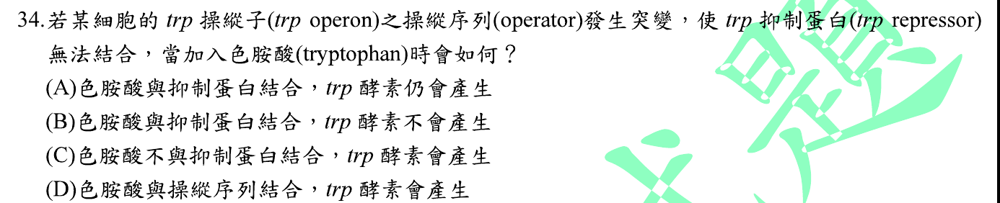
本地原卷PDF5 · 官方混科卷PDF28 · 官方原答案PDF1最下方生物表 · 已核對生物釋疑PDF7下方–8
官方採計：A 原答案：A
未列於本輪取得115生物釋疑PDF7下方至8；依同年度答案PDF1最下方生物表採計
主分類：Ch18 Regulation of Gene Expression
18.1 / Operons: The Basic Concept
目錄行1107；條目起始印刷頁366；實際目錄 PDF39
次分類：Ch18 Regulation of Gene Expression
18.1 / Repressible and Inducible Operons: Two Types of Negative Gene Regulation
目錄行1110；條目起始印刷頁368；實際目錄 PDF39
主分類理由：18.1 / Operons: The Basic Concept：operator不能結合抑制蛋白直接涉及操縱組的開關結構。
次分類理由：18.1 / Repressible and Inducible Operons: Two Types of Negative Gene Regulation：色胺酸作為共抑制物的負調控另對照可抑制操縱組條目。
科學說明：A。在題設單一操縱基因阻遏模型，色胺酸可結合抑制蛋白，但該蛋白仍不能結合突變operator，故不能按此開關關閉轉錄；不據此宣稱衰減等所有其他調控機制均被消除。
來源涵蓋範圍：Campbell正文支援分類原理；題目限定及來源措辭差異保留於科學說明。
教材正文：印刷366／PDF415、印刷367／PDF416、印刷368／PDF417、印刷369／PDF418
補充來源：本題未另列課本外來源
另行比較：分開檢查色胺酸與抑制蛋白結合、抑制蛋白與operator結合。
第一步仍可發生，第二步被突變阻斷；operon與負調控各存最小條目，採計A。
結論：證據確認，分類疑義已解決。完整覆核紀錄
Q35 · 20.3 / Stem Cells of Animals 正式分類
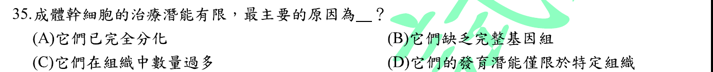
本地原卷PDF5 · 官方混科卷PDF28 · 官方原答案PDF1最下方生物表 · 已核對生物釋疑PDF7下方–8
官方採計：D 原答案：D
未列於本輪取得115生物釋疑PDF7下方至8；依同年度答案PDF1最下方生物表採計
主分類：Ch20 DNA Tools and Biotechnology
20.3 / Stem Cells of Animals
目錄行1267；條目起始印刷頁430；實際目錄 PDF40
主分類理由：20.3 / Stem Cells of Animals：比較成體與胚胎幹細胞分化潛能，直接屬動物幹細胞。
次分類理由：無另列最小次條目；成人幹細胞仍能自我更新與有限分化，D而非A/B/C，主項不擴成所有醫療應用。
科學說明：D。成體幹細胞通常受限於特定組織或譜系，胚胎幹細胞具多能性；限制不是由成體細胞失去大部分基因組造成。
來源涵蓋範圍：Campbell正文支援分類原理；題目限定及來源措辭差異保留於科學說明。
教材正文：印刷430／PDF479、印刷431／PDF480、印刷432／PDF481
補充來源：本題未另列課本外來源
另行比較：比較分化潛能限制與缺基因組、完全分化、數量多。
成人幹細胞仍能自我更新與有限分化，D而非A/B/C，主項不擴成所有醫療應用。
結論：證據確認，分類疑義已解決。完整覆核紀錄
Q36 · 35.1 / Vascular Plant Organs: Roots, Stems, and Leaves 正式分類
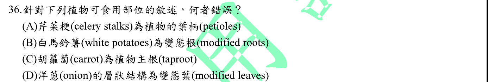
本地原卷PDF5 · 官方混科卷PDF28 · 官方原答案PDF1最下方生物表 · 已核對生物釋疑PDF7下方–8
官方採計：B 原答案：B
未列於本輪取得115生物釋疑PDF7下方至8；依同年度答案PDF1最下方生物表採計
主分類：Ch35 Vascular Plant Structure, Growth, and Development
35.1 / Vascular Plant Organs: Roots, Stems, and Leaves
目錄行2283；條目起始印刷頁759；實際目錄 PDF44
主分類理由：35.1 / Vascular Plant Organs: Roots, Stems, and Leaves：馬鈴薯、胡蘿蔔、芹菜與洋蔥的食用部位，須辨識根莖葉的特化器官。
次分類理由：無另列最小次條目；錯誤選項B確認；分類是根莖葉而非營養儲存代謝。
科學說明：B為錯誤敘述。馬鈴薯塊莖是地下莖，芽眼可辨；胡蘿蔔主要是儲藏根、芹菜常食部分是葉柄，洋蔥鱗莖的肥厚部分主要為葉基。
來源涵蓋範圍：Campbell正文支援分類原理；題目限定及來源措辭差異保留於科學說明。
教材正文：印刷759／PDF808、印刷760／PDF809、印刷761／PDF810、印刷762／PDF811
補充來源：本題未另列課本外來源
Q37 · 35.3 / Primary Growth of Roots 正式分類
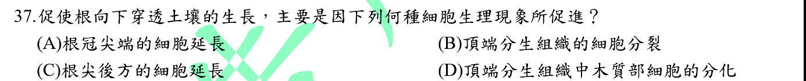
本地原卷PDF5 · 官方混科卷PDF28 · 官方原答案PDF1最下方生物表 · 釋疑PDF8
官方採計：C 原答案：C
同年度釋疑維持原答案C
主分類：Ch35 Vascular Plant Structure, Growth, and Development
35.3 / Primary Growth of Roots
目錄行2300；條目起始印刷頁768；實際目錄 PDF44
主分類理由：35.3 / Primary Growth of Roots：把根尖推入土壤的主要力量來自伸長區細胞延長，屬根的初生生長。
次分類理由：無另列最小次條目；35.3印刷768有直接證據，官方誤寫concept6.4照存，不沿用錯誤編號。
科學說明：C且釋疑維持C。分生區產生新細胞，後方伸長區使根伸長。官方寫「第35章concept 6.4」的編號有誤；本地實際是Concept35.3的Primary Growth of Roots，印刷768／PDF817，原釋疑不修改。
來源涵蓋範圍：Campbell正文支援分類原理；題目限定及來源措辭差異保留於科學說明。
教材正文：印刷768／PDF817、印刷769／PDF818
補充來源：本題未另列課本外來源
另行比較：比較分裂區、伸長區、根冠與木質分化；核對釋疑錯引章節。
35.3印刷768有直接證據，官方誤寫concept6.4照存，不沿用錯誤編號。
結論：證據確認，分類疑義已解決。完整覆核紀錄
Q38 · 35.4 / The Vascular Cambium and Secondary Vascular Tissue 正式分類
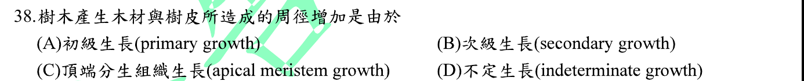
本地原卷PDF5 · 官方混科卷PDF28 · 官方原答案PDF1最下方生物表 · 已核對生物釋疑PDF7下方–8
官方採計：B 原答案：B
未列於本輪取得115生物釋疑PDF7下方至8；依同年度答案PDF1最下方生物表採計
主分類：Ch35 Vascular Plant Structure, Growth, and Development
35.4 / The Vascular Cambium and Secondary Vascular Tissue
目錄行2310；條目起始印刷頁773；實際目錄 PDF44
次分類：Ch35 Vascular Plant Structure, Growth, and Development
35.4 / The Cork Cambium and the Production of Periderm
目錄行2313；條目起始印刷頁774；實際目錄 PDF44
主分類理由：35.4 / The Vascular Cambium and Secondary Vascular Tissue：多年木本莖增粗並形成木材，主要由維管束形成層向內外產生次生組織。
次分類理由：35.4 / The Cork Cambium and the Production of Periderm：樹皮外部周皮的形成需木栓形成層，與維管束形成層不可混同。
科學說明：B。次生生長增加莖徑；維管束形成層產生次生木質部與韌皮部，木栓形成層形成周皮。樹皮包括維管束形成層以外組織，不等同只有木栓。
來源涵蓋範圍：Campbell正文支援分類原理；題目限定及來源措辭差異保留於科學說明。
教材正文：印刷772／PDF821、印刷773／PDF822、印刷774／PDF823、印刷775／PDF824、印刷776／PDF825
補充來源：本題未另列課本外來源
另行比較：分開維管束形成層與木栓形成層產物，比較初生和次生生長。
兩個真實最小項共同支援木材與樹皮；章35統計去重，同章次項不刪。
結論：證據確認，分類疑義已解決。完整覆核紀錄
Q39 · 38.1 / Development of Male Gametophytes in Pollen Grains 正式分類
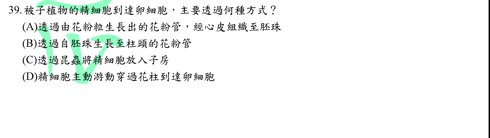
本地原卷PDF5 · 官方混科卷PDF28 · 官方原答案PDF1最下方生物表 · 已核對生物釋疑PDF7下方–8
官方採計：A 原答案：A
未列於本輪取得115生物釋疑PDF7下方至8；依同年度答案PDF1最下方生物表採計
主分類：Ch38 Angiosperm Reproduction and Biotechnology
38.1 / Development of Male Gametophytes in Pollen Grains
目錄行2492；條目起始印刷頁826；實際目錄 PDF45
主分類理由：38.1 / Development of Male Gametophytes in Pollen Grains：雄配子體的花粉管把精細胞送過花柱到胚囊，題問的是精子遞送。
次分類理由：無另列最小次條目；只有A符合被子植物花粉管遞送；正文子標題比目錄更細，附記子標而不偽造目錄ID。
科學說明：A。花粉管在柱頭萌發後穿過花柱向胚珠延伸並釋出精細胞。昆蟲搬運花粉屬授粉，不能替代花粉管的內部遞送。正文Sperm Delivery by Pollen Tubes未另列於實際詳細目錄，保存可核實最小目錄Development of Male Gametophytes in Pollen Grains並附正文子標題。
來源涵蓋範圍：Campbell正文支援分類原理；題目限定及來源措辭差異保留於科學說明。
教材正文：印刷826／PDF875、印刷827／PDF876、印刷828／PDF877
補充來源：本題未另列課本外來源
另行比較：比較花粉從柱頭出發、由胚珠反向出發、昆蟲直接放精子及精子游泳。
只有A符合被子植物花粉管遞送；正文子標題比目錄更細，附記子標而不偽造目錄ID。
結論：證據確認，分類疑義已解決。完整覆核紀錄
Q40 · 36.3 / Transport of Water and Minerals into the Xylem 正式分類
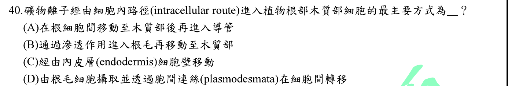
本地原卷PDF6 · 官方混科卷PDF29 · 官方原答案PDF1最下方生物表 · 已核對生物釋疑PDF7下方–8
官方採計：D 原答案：D
未列於本輪取得115生物釋疑PDF7下方至8；依同年度答案PDF1最下方生物表採計
主分類：Ch36 Resource Acquisition and Transport in Vascular Plants
36.3 / Transport of Water and Minerals into the Xylem
目錄行2378；條目起始印刷頁792；實際目錄 PDF45
次分類：Ch36 Resource Acquisition and Transport in Vascular Plants
36.2 / The Apoplast and Symplast: Transport Continuums
目錄行2359；條目起始印刷頁787；實際目錄 PDF45
主分類理由：36.3 / Transport of Water and Minerals into the Xylem：題目問根吸收礦物質後進入維管束的通路，主列進入木質部運輸。
次分類理由：36.2 / The Apoplast and Symplast: Transport Continuums：共質體經原生質絲相連的定義獨立保存，雖同章仍不省略。
科學說明：D。根毛吸收後可循共質體經原生質絲通過皮層；凱氏帶阻擋內皮層的質外體旁路。進入木質部的最終步驟仍涉及膜運輸，不說整條路徑永遠不跨膜，也不把成熟導管當活細胞共質體。
來源涵蓋範圍：Campbell正文支援分類原理；題目限定及來源措辭差異保留於科學說明。
教材正文：印刷787／PDF836、印刷788／PDF837、印刷792／PDF841
補充來源：本題未另列課本外來源
另行比較：比較共質體、質外體、滲透運水與礦物質主動吸收。
D確認，原題木質部細胞措辭保留；成熟導管非活共質體，最後裝載步驟界線明列。
結論：證據確認，分類疑義已解決。完整覆核紀錄
Q41 · 39.2 / A Survey of Plant Hormones 正式分類
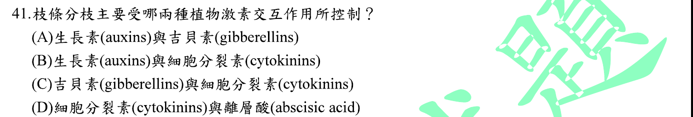
本地原卷PDF6 · 官方混科卷PDF29 · 官方原答案PDF1最下方生物表 · 已核對生物釋疑PDF7下方–8
官方採計：B 原答案：B
未列於本輪取得115生物釋疑PDF7下方至8；依同年度答案PDF1最下方生物表採計
主分類：Ch39 Plant Responses to Internal and External Signals
39.2 / A Survey of Plant Hormones
目錄行2557；條目起始印刷頁847；實際目錄 PDF45
主分類理由：39.2 / A Survey of Plant Hormones：生長素與細胞分裂素共同調節分枝，是植物激素功能比較。
次分類理由：無另列最小次條目；B是所列最適當配對，激素總覽為實際最小目錄；不建立文字目錄不存在的分枝葉節。
科學說明：B。生長素參與頂芽優勢，細胞分裂素促進側芽生長；課本同段亦討論獨腳金內酯，因此這一對不是分枝控制的全部因子。
來源涵蓋範圍：Campbell正文支援分類原理；題目限定及來源措辭差異保留於科學說明。
教材正文：印刷847／PDF896、印刷848／PDF897、印刷849／PDF898、印刷850／PDF899、印刷851／PDF900
補充來源：本題未另列課本外來源
另行比較：比較四組激素與本書同段strigolactones。
B是所列最適當配對，激素總覽為實際最小目錄；不建立文字目錄不存在的分枝葉節。
結論：證據確認，分類疑義已解決。完整覆核紀錄
Q42 · 39.3 / Photoperiodism and Responses to Seasons 正式分類
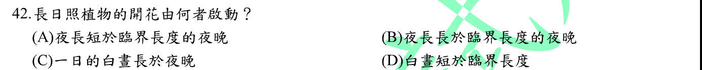
本地原卷PDF6 · 官方混科卷PDF29 · 官方原答案PDF1最下方生物表 · 已核對生物釋疑PDF7下方–8
官方採計：A 原答案：A
未列於本輪取得115生物釋疑PDF7下方至8；依同年度答案PDF1最下方生物表採計
主分類：Ch39 Plant Responses to Internal and External Signals
39.3 / Photoperiodism and Responses to Seasons
目錄行2576；條目起始印刷頁859；實際目錄 PDF45
主分類理由：39.3 / Photoperiodism and Responses to Seasons：長日照植物的開花判準是夜長與臨界暗期，屬光週期。
次分類理由：無另列最小次條目；A以各植物臨界暗期定義，避開C的不固定判準。
科學說明：A。典型長日植物在連續黑夜短於臨界值時開花；不能一律把臨界值寫成12小時，短暫夜間照光也可影響反應。
來源涵蓋範圍：Campbell正文支援分類原理；題目限定及來源措辭差異保留於科學說明。
教材正文：印刷859／PDF908、印刷860／PDF909、印刷861／PDF910
補充來源：本題未另列課本外來源
Q43 · 43.1 / Innate Immunity of Vertebrates 正式分類
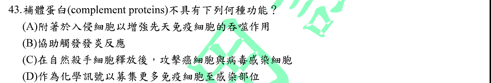
本地原卷PDF6 · 官方混科卷PDF29 · 官方原答案PDF1最下方生物表 · 已核對生物釋疑PDF7下方–8
官方採計：C 原答案：C
未列於本輪取得115生物釋疑PDF7下方至8；依同年度答案PDF1最下方生物表採計
主分類：Ch43 The Immune System
43.1 / Innate Immunity of Vertebrates
目錄行2870；條目起始印刷頁954；實際目錄 PDF47
主分類理由：43.1 / Innate Immunity of Vertebrates：比較補體與自然殺手細胞的先天免疫功能，主列脊椎動物先天免疫。
次分類理由：無另列最小次條目；C為非補體功能；先天免疫主項已涵蓋兩者比較，不以抗體參與反應改成適應性免疫主分類。
科學說明：C為所問非補體功能。補體可促進發炎、趨化、調理吞噬及膜攻擊；NK細胞釋放殺傷分子屬細胞效應。補體與抗體可協同，但不因此等同NK細胞分泌物。
來源涵蓋範圍：Campbell正文支援分類原理；題目限定及來源措辭差異保留於科學說明。
教材正文：印刷954／PDF1003、印刷955／PDF1004、印刷956／PDF1005、印刷957／PDF1006、印刷966／PDF1015
補充來源：本題未另列課本外來源
另行比較：比較補體可溶蛋白與NK細胞釋放的殺傷分子。
C為非補體功能；先天免疫主項已涵蓋兩者比較，不以抗體參與反應改成適應性免疫主分類。
結論：證據確認，分類疑義已解決。完整覆核紀錄
Q44 · 43.2 / Antigen Recognition by T Cells 正式分類
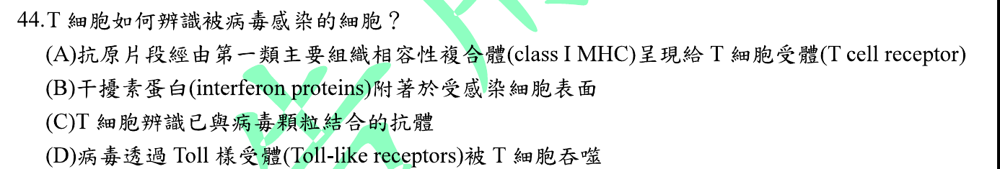
本地原卷PDF6 · 官方混科卷PDF29 · 官方原答案PDF1最下方生物表 · 已核對生物釋疑PDF7下方–8
官方採計：A 原答案：A
未列於本輪取得115生物釋疑PDF7下方至8；依同年度答案PDF1最下方生物表採計
主分類：Ch43 The Immune System
43.2 / Antigen Recognition by T Cells
目錄行2886；條目起始印刷頁959；實際目錄 PDF47
次分類：Ch43 The Immune System
43.3 / Cytotoxic T Cells: A Response to Infected Host Cells
目錄行2902；條目起始印刷頁966；實際目錄 PDF47
主分類理由：43.2 / Antigen Recognition by T Cells：TCR辨認受感染細胞表面的胜肽與MHC複合體，主列T細胞抗原辨識。
次分類理由：43.3 / Cytotoxic T Cells: A Response to Infected Host Cells：辨識後的CD8細胞毒殺傷功能另列感染宿主細胞反應。
科學說明：A。典型受病毒感染體細胞藉MHC I呈現內源性胜肽，供CD8 T細胞辨認；輔助T細胞通常辨認MHC II，不能把所有T細胞都說成只認MHC I。
來源涵蓋範圍：Campbell正文支援分類原理；題目限定及來源措辭差異保留於科學說明。
教材正文：印刷959／PDF1008、印刷960／PDF1009、印刷966／PDF1015、印刷967／PDF1016
補充來源：本題未另列課本外來源
另行比較：核對胜肽MHC I/TCR與MHC II、抗體、Toll辨認的區別。
採計A，主抗原辨識、次細胞毒殺；限定典型CD8反應。
結論：證據確認，分類疑義已解決。完整覆核紀錄
Q45 · 40.3 / Balancing Heat Loss and Gain 正式分類
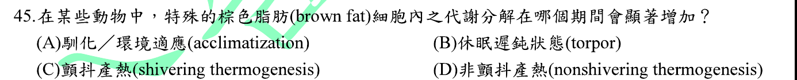
本地原卷PDF6 · 官方混科卷PDF29 · 官方原答案PDF1最下方生物表 · 已核對生物釋疑PDF7下方–8
官方採計：D 原答案：D
未列於本輪取得115生物釋疑PDF7下方至8；依同年度答案PDF1最下方生物表採計
主分類：Ch40 Basic Principles of Animal Form and Function
40.3 / Balancing Heat Loss and Gain
目錄行2649；條目起始印刷頁885；實際目錄 PDF46
次分類：Ch09 Cellular Respiration and Fermentation
9.4 / An Accounting of ATP Production by Cellular Respiration
目錄行588；條目起始印刷頁177；實際目錄 PDF37
主分類理由：40.3 / Balancing Heat Loss and Gain：褐色脂肪以產熱維持體溫，主列熱量得失平衡。
次分類理由：9.4 / An Accounting of ATP Production by Cellular Respiration：課本呼吸ATP產量段落明述褐色脂肪的解偶聯蛋白，補足能量去向。
科學說明：D。非顫抖產熱可藉粒線體內膜解偶聯蛋白使質子回流而不驅動ATP合成，能量以熱散出；不是靠骨骼肌顫抖。
來源涵蓋範圍：Campbell正文支援分類原理；題目限定及來源措辭差異保留於科學說明。
教材正文：印刷175／PDF224、印刷176／PDF225、印刷177／PDF226、印刷178／PDF227、印刷885／PDF934、印刷886／PDF935、印刷887／PDF936
補充來源：本題未另列課本外來源
另行比較：比較非顫抖與顫抖產熱、torpor低代謝及馴化情境。
D最直接；次項採印刷178直接載有解偶聯褐色脂肪的ATP產量條目588，替換較泛的化學滲透次項。
結論：證據確認，分類疑義已解決。完整覆核紀錄
Q46 · 44.5 / Homeostatic Regulation of the Kidney 正式分類
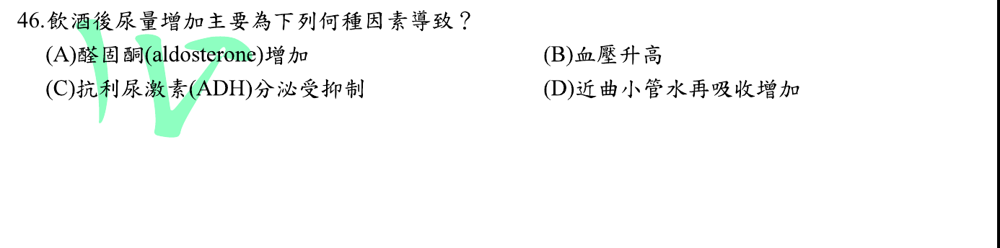
本地原卷PDF6 · 官方混科卷PDF29 · 官方原答案PDF1最下方生物表 · 已核對生物釋疑PDF7下方–8
官方採計：C 原答案：C
未列於本輪取得115生物釋疑PDF7下方至8；依同年度答案PDF1最下方生物表採計
主分類：Ch44 Osmoregulation and Excretion
44.5 / Homeostatic Regulation of the Kidney
目錄行2987；條目起始印刷頁994；實際目錄 PDF47
主分類理由：44.5 / Homeostatic Regulation of the Kidney：酒精抑制ADH使集尿管水再吸收減少，是腎臟恆定調控。
次分類理由：無另列最小次條目；C與教材印刷995酒精例子一致，腎臟恆定調控為最小項。
科學說明：C。ADH減少降低集尿管對水的通透性，使尿量增加；不是直接提高ADH分泌或增加水再吸收。
來源涵蓋範圍：Campbell正文支援分類原理；題目限定及來源措辭差異保留於科學說明。
教材正文：印刷994／PDF1043、印刷995／PDF1044
補充來源：本題未另列課本外來源
Q47 · 46.4 / Hormonal Control of Female Reproductive Cycles 正式分類
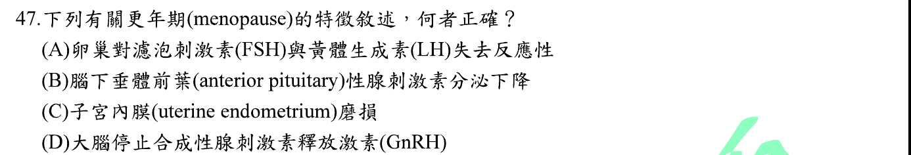
本地原卷PDF7 · 官方混科卷PDF30 · 官方原答案PDF1最下方生物表 · 已核對生物釋疑PDF7下方–8
官方採計：A 原答案：A
未列於本輪取得115生物釋疑PDF7下方至8；依同年度答案PDF1最下方生物表採計
主分類：Ch46 Animal Reproduction
46.4 / Hormonal Control of Female Reproductive Cycles
目錄行3104；條目起始印刷頁1032；實際目錄 PDF48
主分類理由：46.4 / Hormonal Control of Female Reproductive Cycles：停經涉及卵巢對性腺刺激素反應降低，屬女性生殖週期激素控制。
次分類理由：無另列最小次條目；A符合本書印刷1033，保留原題用更年期對應menopause的用語，不擴張成所有更年期階段。
科學說明：A。課本指出停經卵巢失去對FSH與LH的反應；不是子宮內膜單純磨損，也不能說FSH及LH分泌必然降低。
來源涵蓋範圍：Campbell正文支援分類原理；題目限定及來源措辭差異保留於科學說明。
教材正文：印刷1032／PDF1081、印刷1033／PDF1082、印刷1034／PDF1083、印刷1035／PDF1084
補充來源：本題未另列課本外來源
另行比較：對照停經卵巢失去反應與性腺刺激素下降、內膜磨損、GnRH完全停止。
A符合本書印刷1033，保留原題用更年期對應menopause的用語，不擴張成所有更年期階段。
結論：證據確認，分類疑義已解決。完整覆核紀錄
Q48 · 47.1 / Fertilization 正式分類
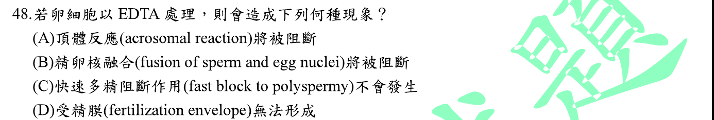
本地原卷PDF7 · 官方混科卷PDF30 · 官方原答案PDF1最下方生物表 · 已核對生物釋疑PDF7下方–8
官方採計：D 原答案：D
未列於本輪取得115生物釋疑PDF7下方至8；依同年度答案PDF1最下方生物表採計
主分類：Ch47 Animal Development
47.1 / Fertilization
目錄行3134；條目起始印刷頁1044；實際目錄 PDF48
次分類：Ch11 Cell Communication
11.3 / Small Molecules and Ions as Second Messengers
文字目錄漏列and Ions；採本地PDF目錄及正文完整題名，原文字行保留。 目錄行724；條目起始印刷頁223；實際目錄 PDF38
主分類理由：47.1 / Fertilization：Ca2+啟動皮質反應與受精膜形成，主列受精。
次分類理由：11.3 / Small Molecules and Ions as Second Messengers：細胞內Ca2+作第二傳訊者，補充實驗干預的訊號層次。
科學說明：官方D。海膽模型的卵內Ca2+升高引發皮質顆粒胞吐及受精膜形成；若螯合有效壓低卵內游離鈣，該反應可受阻。原題僅寫EDTA處理，未給物種、處理位置與膜通透條件；作者教材的直接證據是卵內注射EGTA，不能偷換成任何卵外EDTA浴都必然耗竭ER鈣或完全等效。
來源涵蓋範圍：Campbell支援所列分類原理；具名物種地點、現代技術與科學界線由列示來源補足，實讀範圍見來源紀錄。
教材正文：印刷224／PDF273、印刷1044／PDF1093、印刷1045／PDF1094、印刷1046／PDF1095、印刷1047／PDF1096
補充來源：S48
另行比較：區別頂體反應、膜電位快速阻斷、卵核融合與鈣依賴皮質反應。
官方D照存；實驗處理未詳述造成的是答案科學適用範圍問題，受精／鈣傳訊分類無待解疑義。
結論：證據確認，分類疑義已解決。完整覆核紀錄
Q49 · 49.5 / Alzheimer’s Disease 正式分類
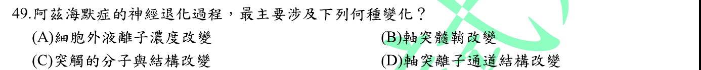
本地原卷PDF7 · 官方混科卷PDF30 · 官方原答案PDF1最下方生物表 · 已核對生物釋疑PDF7下方–8
官方採計：C 原答案：C
未列於本輪取得115生物釋疑PDF7下方至8；依同年度答案PDF1最下方生物表採計
主分類：Ch49 Nervous Systems
49.5 / Alzheimer’s Disease
目錄行3312；條目起始印刷頁1103；實際目錄 PDF48
次分類：Ch49 Nervous Systems
49.4 / Memory and Learning
目錄行3293；條目起始印刷頁1100；實際目錄 PDF48
主分類理由：49.5 / Alzheimer’s Disease：阿茲海默症的病理與認知障礙，主列該具名疾病。
次分類理由：49.4 / Memory and Learning：突觸強度及結構參與記憶，另保存記憶與學習最小條目。
科學說明：C為選項中的合理敘述。疾病涉及突觸功能與結構改變、神經細胞損失及類澱粉與tau病理，不把任一分子或突觸變化寫成唯一致病機制。
來源涵蓋範圍：Campbell正文支援分類原理；題目限定及來源措辭差異保留於科學說明。
教材正文：印刷1100／PDF1149、印刷1101／PDF1150、印刷1103／PDF1152、印刷1104／PDF1153
補充來源：本題未另列課本外來源
另行比較：比較突觸病理與離子濃度、髓鞘及通道單項變化。
具名Alzheimer最小項為主、記憶突觸機制為同章次項，C只作選項間的最佳敘述。
結論：證據確認，分類疑義已解決。完整覆核紀錄
Q50 · 43.4 / Exaggerated, Self-Directed, and Diminished Immune Responses 正式分類
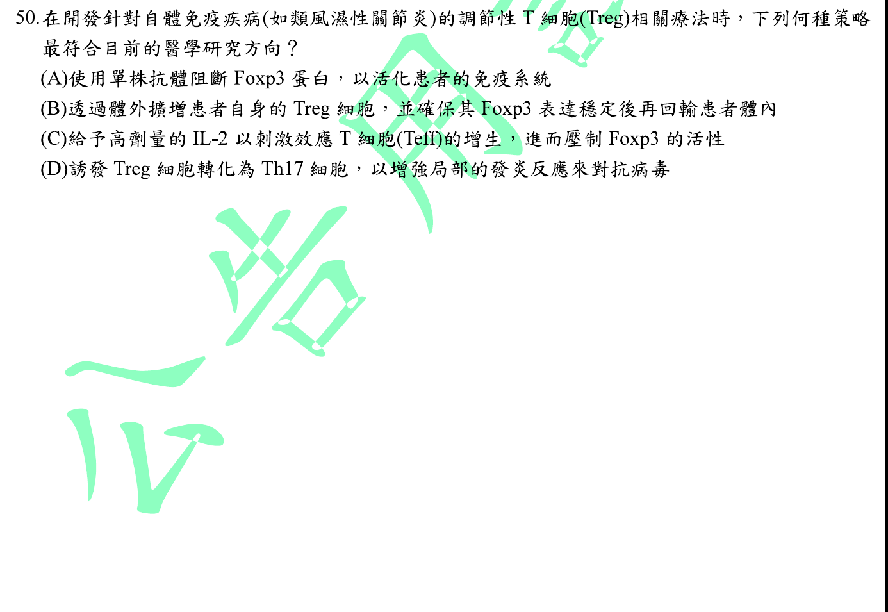
本地原卷PDF7 · 官方混科卷PDF30 · 官方原答案PDF1最下方生物表 · 已核對生物釋疑PDF7下方–8
官方採計：B 原答案：B
未列於本輪取得115生物釋疑PDF7下方至8；依同年度答案PDF1最下方生物表採計
主分類：Ch43 The Immune System
43.4 / Exaggerated, Self-Directed, and Diminished Immune Responses
目錄行2924；條目起始印刷頁970；實際目錄 PDF47
次分類：Ch43 The Immune System
43.2 / B Cell and T Cell Development
目錄行2889；條目起始印刷頁960；實際目錄 PDF47
主分類理由：43.4 / Exaggerated, Self-Directed, and Diminished Immune Responses：以調節性T細胞抑制自體免疫，主列免疫失調。
次分類理由：43.2 / B Cell and T Cell Development：T細胞發育的自我耐受機制支援Treg維持耐受的目標。
科學說明：B。體外擴增並維持Foxp3穩定的自體Treg再回輸，是研究中的自體免疫細胞治療策略。原始SLE研究支援此製程與表型，不代表已證實能常規治癒所有SLE或RA患者；抑制Foxp3反而與維持Treg功能目標相反。
來源涵蓋範圍：Campbell支援所列分類原理；具名物種地點、現代技術與科學界線由列示來源補足，實讀範圍見來源紀錄。
教材正文：印刷960／PDF1009、印刷961／PDF1010、印刷970／PDF1019、印刷971／PDF1020
補充來源：S50
另行比較：比較維持Treg/Foxp3與抑制Foxp3、刺激Teff及誘發Th17。
B符合耐受性細胞治療方向，SLE研究僅補策略原理，不宣稱RA治療已經正式成功。
結論：證據確認，分類疑義已解決。完整覆核紀錄
目前篩選沒有符合的題目；本年度總數仍為50題。
補充來源
查證日期：2026-09-09。使用原始研究摘要、官方資料與作者教材，不宣稱所有出版商全文已取得。詳細界線見來源紀錄。
- S05 NIDDK：成人與兒童eGFR計算
肌酸酐可供估算GFR，eGFR不等同精確測量。
實讀範圍：官方網頁eGFR估算限制與成人計算說明，非個案診斷。
原始來源1 - S06 Purves等：Second Messengers（Neuroscience 2e）
NO可被作者列作非典型第二傳訊者，其角色依訊號路徑與命名範圍而定。
實讀範圍：作者教材章節，NO及cGMP相關段落；非Campbell原書。
原始來源1 - S10 台江與陽明山國家公園：四草紅樹林及夢幻湖
四草具五梨跤、欖李、海茄苳與人工復育水筆仔；臺灣水韭野生棲地為夢幻湖。
實讀範圍：台江PDF1印刷54完整地點樹種段落；陽明山夢幻湖介紹實讀，不宣稱現場調查。
原始來源1 · 原始來源2 - S15 NCI：CAR T Cells: Engineering Immune Cells to Treat Cancer
自體T細胞被取出、體外改造與擴增後回輸。
實讀範圍：官方說明A living drug製程段落及後續研究範圍。
原始來源1 - S16 Dong等1996 AAV包裝研究；FDA AAVrh74肝衰竭公告
AAV包裝容量有限，研究所用載體最佳範圍約4.1–4.9kb；安全性不能以相對低免疫原性概括保證。
實讀範圍：Dong原始研究PubMed摘要；FDA 2025-07-18安全公告的特定AAVrh74治療肝衰竭訊息，未讀所有載體臨床試驗。
原始來源1 · 原始來源2 - S21 FDA WEGOVY 2026-02說明書
GLP-1受體作用與食慾相關腦區及延緩胃排空有關。
實讀範圍：56頁PDF之第21頁12.1–12.2；只用於題目機制查證，不提供用藥指示。
原始來源1 - S24 CDC：Using Tandem Mass Spectrometry for Metabolic Disease Screening Among Newborns
乾血點MS/MS分析胺基酸與醯基肉鹼等代謝物。
實讀範圍：MMWR報告Introduction、Background及Laboratory Practice的分析物段落；歷史技術資料，不當成2026年完整篩檢政策。
原始來源1 - S25 Buffie等：Precision microbiome reconstitution restores bile acid mediated resistance to Clostridium difficile
共生菌及次級膽汁酸代謝可提供定殖抗性，支援菌群重建的生態功能。
實讀範圍：Nature原始研究摘要，涉及人類資料與小鼠模型；未取得付費全文，不將特定菌作用泛化為所有FMT效應。
原始來源1 - S28 Snell等1993 Huntington重複序列研究；GeneReviews Huntington Disease
CAG重複數與發病年齡呈負相關；生殖系重複擴增可造成早發現象。
實讀範圍：Snell原始研究PubMed摘要；作者GeneReviews Anticipation段落。Huntington為機制實例，不指定原題未給的疾病名稱。
原始來源1 · 原始來源2 - S29 Sugiura等：Newly born peroxisomes are a hybrid of mitochondrial and ER-derived pre-peroxisomes
特定人類纖維母細胞模型的新生過氧化體可結合粒線體與ER來源前體。
實讀範圍：Nature原始研究摘要；不將模型結果寫成所有細胞唯一生合成路徑。
原始來源1 - S33 Hirata等：Evolution of Complex RNA Polymerases: The Complete Archaeal RNA Polymerase Structure
古菌的一種多次單元RNA聚合酶與真核核RNA聚合酶具結構相似性，酵素種類與次單元數目須區別。
實讀範圍：PMC原始結構研究摘要與Introduction的古菌一種、真核三種核RNA聚合酶比較。
原始來源1 - S48 Gilbert：Developmental Biology 6e，The Activation of Egg Metabolism
卵內注射EGTA可抑制海膽皮質反應；不能等同未交代處理位置的卵外EDTA。
實讀範圍：作者教材The Early Responses段落及鈣注射實驗敘述；與Campbell鈣波和皮質反應對照。
原始來源1 - S50 Dall’Era等：Adoptive Regulatory T Cell Therapy in a Patient with Systemic Lupus Erythematosus
早期自體Treg回輸研究使用體外擴增且Foxp3穩定的細胞，支援策略可行性但非普遍療效證明。
實讀範圍：PMC原始研究個案、方法及細胞表型段落；單一SLE參與者，非RA常規治療證據。
原始來源1